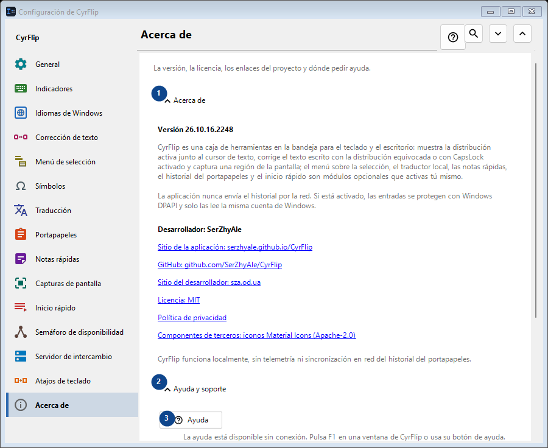
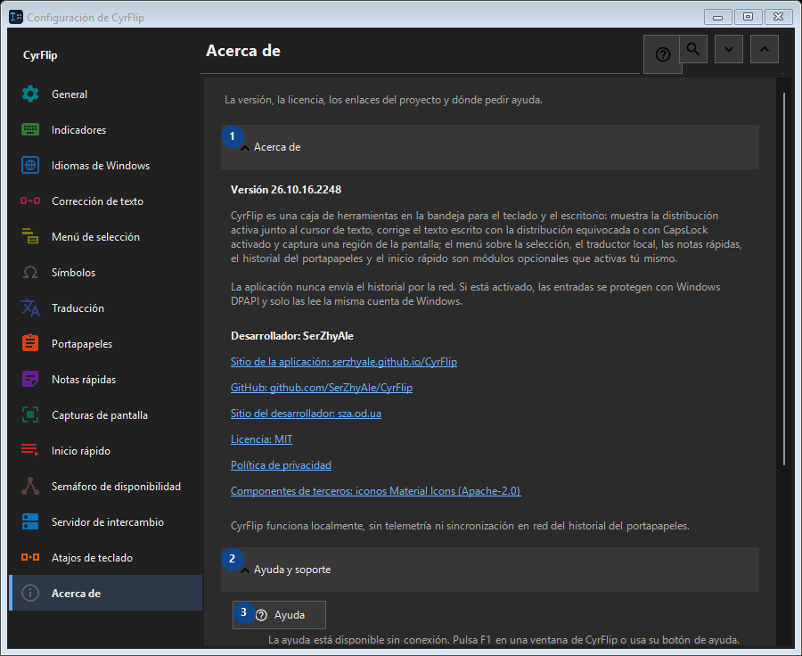

Acerca de
Para qué sirve
La versión, la licencia, los enlaces del proyecto y dónde pedir ayuda.


Orden de uso
Los ajustes se aplican de inmediato. No hay un orden obligatorio; usa los grupos siguientes.
Elementos
1. Acerca de
Usa este comando para la acción indicada. Lee cualquier confirmación antes de aceptarla.
Tus atajos2. Ayuda y soporte
Usa este comando para la acción indicada. Lee cualquier confirmación antes de aceptarla.
Tus atajos3. Ayuda
La ayuda está disponible sin conexión. Pulsa F1 en una ventana de CyrFlip o usa su botón de ayuda.
Tus atajos4. Mostrar la bienvenida..
Conoce CyrFlip y configúralo.
Tus atajos5. Diagnosticar la posición del cursor...
Crea un informe local sobre cómo ven el cursor Windows y UI Automation. Úsalo solo si la marca no aparece o está mal colocada en una aplicación concreta.
Tus atajos6. Enviar los registros al autor..
Reúne los registros de CyrFlip en un solo archivo comprimido y abre un mensaje al autor con ese adjunto. El mensaje lo envía usted - CyrFlip no transmite nada por la red. El historial del portapapeles nunca entra en el archivo.
Tus atajos